CF-MDA1Y
 Características
Características
Módulo de 1 RELÉ direccionable
CF-MDA1Y
Fabricados en ABS termorresistente
1 Relay supervisado, 1 Relay NO supervisado.
Aislador de cortocircuito: si
Tensión supervisión en relé: 7V con polaridad inversa
Indicador de activación: led verde
Indicador de comunicación: led rojo
Alimentación: 24 - 35V con polaridad
Dimensiones: 140,5x73 x 48mm
Normado: CE, EN 54-18.
GS-GXP1615
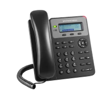
Características
Teléfono IP 1 línea POE
GS-GXP1615
1 cuenta SIP, 2 teclas de línea, conferencia de 3 vías, 3
XML teclas programables sensibles al contexto. Dos
puertos conmutados de 10/100 mbps. Soporte de
EHS para audífonos. Integrado PoE (GXP1615).
GS-GXP1610 NO POE
GS-GXP1625
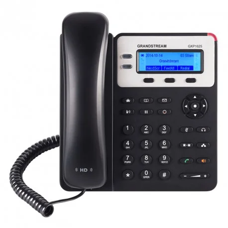
Características
Teléfono IP 2 líneas POE
GS-GXP1625
2 cuentas SIP, 2 teclas de línea, conferencia de 3
participantes, 3 teclas XML programables sensibles
al contexto. Dos puertos conmutados de 10/100
mbps, PoE integrado en GXP1625.
Audio HD en altavoz y auricular.
GS-GXP1628
 Características
Características
Teléfono IP 2 líneas puerto Gigabit 8 teclas BLF
GS-GXP1628
2 cuentas SIP, 2 teclas de línea, conferencia de 3
participantes. 8 teclas bicolor BLF/de marcación
rápida. Hasta 1.000 contactos, historial de llamadas
hasta 200 registros.
Dos puertos Gigabit conmutados, PoE integrado.
GS-GXP1760
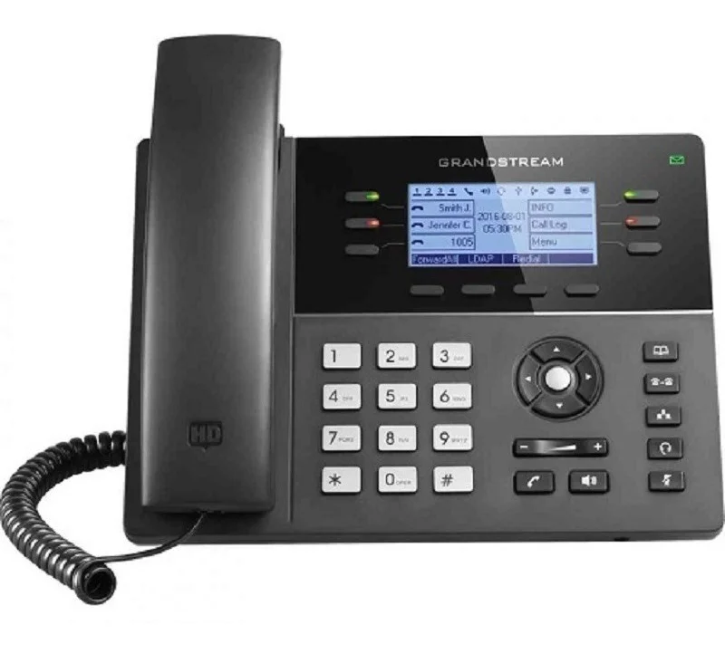
Características
Teléfono IP 6 líneas, 3 cuentas SIP.
GS-GXP1760
3 cuentas SIP, 6 Líneas, 6 teclas de línea bicolor y 4
teclas XML, conferencia de 5 participantes.
24 teclas BLF/de marcación rápida digitalmente
programables y personalizables.
Hasta 2000 contactos, historial de llamadas hasta
500 registros.
2 puertos Ethernet conmutados de 10/100Mbps de
detección automática con POE integrado.
GS-GXP2130
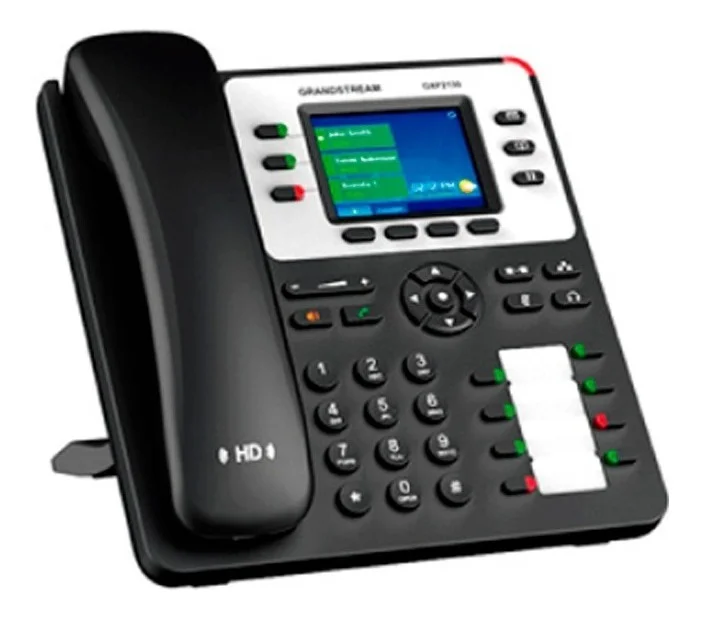
Características
Teléfono IP de 3 líneas, POE integrado, 2 puertos Gigabits.
GS-GXP2130
Soporta 3 líneas, 3 cuentas SIP y conferencia de 4
participantes.
Pantalla LCD a color de 2.8 pulgadas (320 x 240).
2 puertos Gigabit, PoE integrado.
8 teclas bicolor BLF/de marcación rápida.
GS-GXP2135
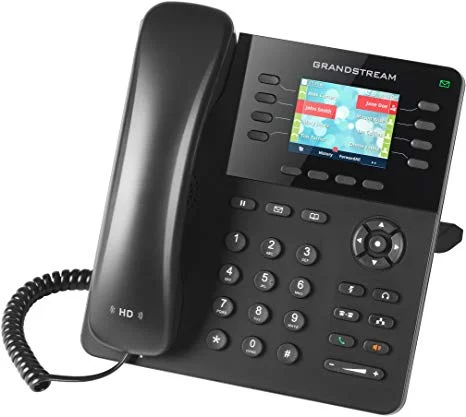
Características
Teléfono IP de 8 líneas, 4 cuentas SIP, 2 puertos de red Gigabit, POE y Bluetooth integrado.
GS-GXP2135
8 líneas, 8 teclas bicolor de línea (con 4 cuentas SIP),
4 teclas programables sensibles al contexto XML,
Conferencia de audio de 4 vías.
2 puertos de red Gigabit, POE integrado.
GS-GXP2160
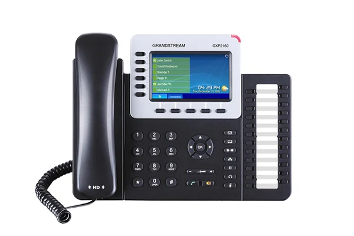
Características
Teléfono IP de 6 líneas, 5 cuentas SIP, 2 puertos de red Gigabit, POE y Bluetooth integrado
GS-GXP2160
Soporta 6 lineas, 6 cuentas SIP y conferencia de voz
de 5 vías.
Pantalla LCD a color de 4.3 pulgadas (480 x 272).
2 puertos Gigabit, PoE integrado.
Audio HD en altavoz y auricular, 5 teclas programables
sensibles al contexto. 24 teclas bicolor BLF/de marca-
ción rápida
Bluetooth integrado.
GS-GXV3370
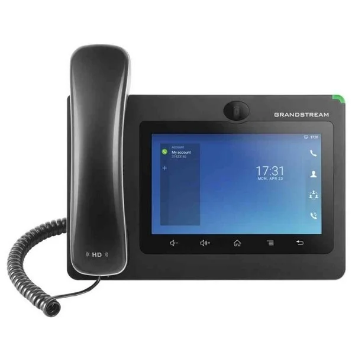
Características
Teléfono IP Multimedia Android 16 líneas, Pantalla Táctil, WIFI
GS-GXV3370
16 líneas con hasta 16 cuentas SIP
Se ejecuta en el sistema operativo AndroidTM 7.0 con
soporte SDK flexible para aplicaciones personalizadas
WiFi y Bluetooth integrados
PoE / PoE + para alimentar el dispositivo y proporcio-
nar conexión de red
Altavoz con cámara acústica HD y cancelación de eco
Pantalla táctil de 5 puntos capacitiva de 7 pulgadas
Fuertes protocolos de seguridad y encriptación
GS-GXP2140
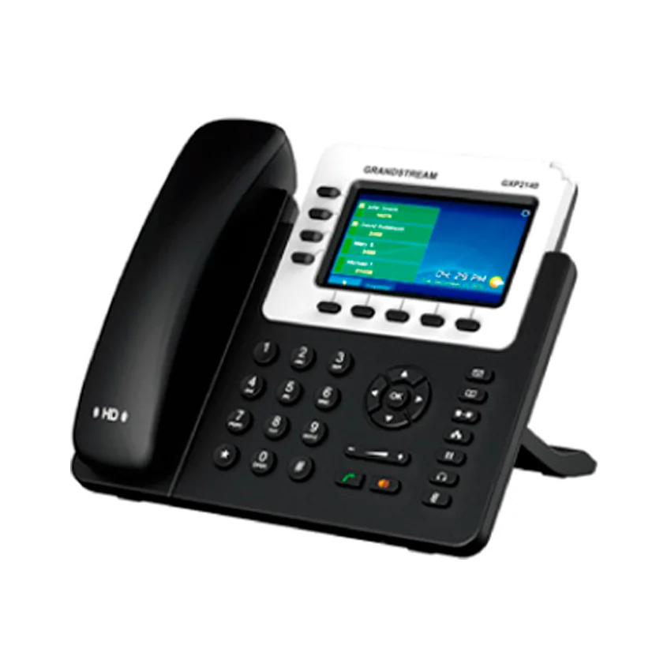
Características
Teléfono IP 4 líneas, 2 puertos Gigabit, POE, bluetooth integrado, soporta módulos de ext.
GS-GXP2140
Soporta 4 líneas, 4 cuentas SIP y conferencia de voz
de 5 participantes.Audio HD en altavoz y auricular, 5
teclas programables sensibles al contexto.
2 puertos Gigabit, PoE integrado. Bluetooth integrado
para uso con audífonos Bluetooth y dispositivos
móviles habilitados para Bluetooth (transfiriendo
libretas de contactos y llamadas)
GS-GXP2170
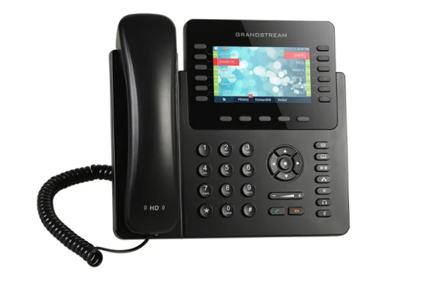
Características
Teléfono IP HD de 12 líneas, 2 puertos Gigabits, POE, bluetooth integrado, soporta módulos de ext.
GS-GXP2170
12 teclas de línea de doble color (con 6 cuentas de
SIP), 5 teclas programables sensibles al contexto XML,
Conferencia de audio de 5 vías
48 teclas de BLF/marcación de rápida digitalmente
programables y personalizables. Bluetooth integrado.
Soporta hasta 4 módulos en cascada GXP2200EXT.
GS-GXV3240
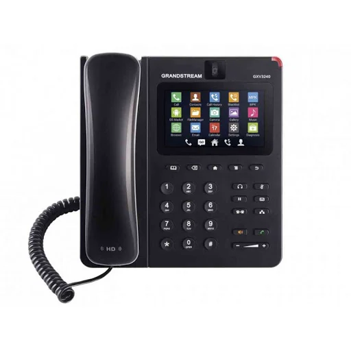
Características
Teléfono IP Multimedia Android, wifi, 6 líneas, soporta módulo de ext.
GS-GXV3240
6 líneas 6 cuentas SIP, conferencias de voz de hasta 6
vías y videoconferencias de 3 vías.
Dos puertos Gigabit conmutados y WiFi integrados
(802.11b/g/n).
Cámara CMOS de 1 megapixel.
Pantalla táctil capacitiva de 4.3.
Soporta hasta 4 módulos en cascada GXP2200EXT.
GS-GXP2200EXT
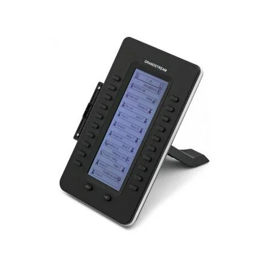
Características
Módulo de extensión.
GS-GXP2200EXT
Pantalla LCD de 128 x 384 con fondo de iluminación
20 botones bicolor programables por módulo, 2
páginas por módulo (40 contactos en total). BLF/mar-
cación rápida.
Conecta hasta 4 módulos que dan 160 contactos/ex-
tensiones.
Teléfonos compatibles GXP2140, GXP2170, GXV3240.
GS-UCM6202
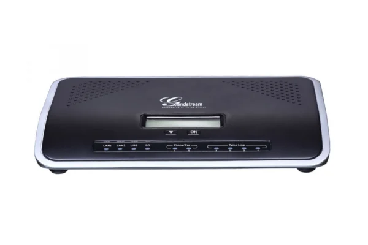
Características
IP PBX 2 Líneas, 500 extensiones, 30 llamadas concurrentes
GS-UCM6202
UCM6202 y UCM6204 soporta hasta 500 usuarios y
30/45 llamadas concurrentes
Aprovisionamiento automático y zero configuración
de los puntos finales SIP de Grandstream
Puertos FXO integrados de 2/4 PSTN, 2 puertos FXS y
hasta 50 cuentas de troncales SIP
Puertos de red Gigabit con PoE integrado, USB, tarjeta SD
Soporta hasta 5 niveles de IVR.
GS-UCM6208
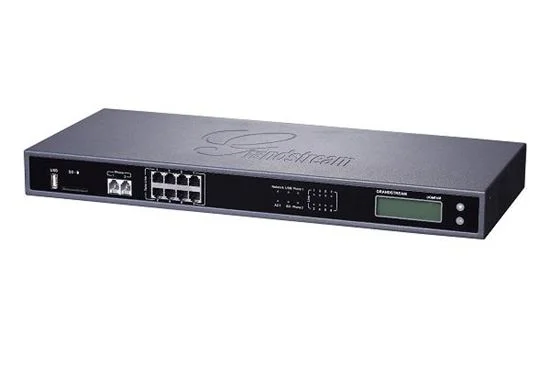
Características
IP PBX 8 Líneas, 800 extensiones,100 llamadas concurrentes
GS-UCM6208
UCM6208 soporta hasta 800 usuarios y 100 llamadas
concurrentes.
8 Puertos FXO integrados, 2 puertos FXS y hasta 50
cuentas troncales SIP. Soporta hasta 5 niveles de IVR
(Interactive Voice Response).
Puertos de red Gigabit con PoE integrado, USB, tarjeta
SD.
GS-UCM6510
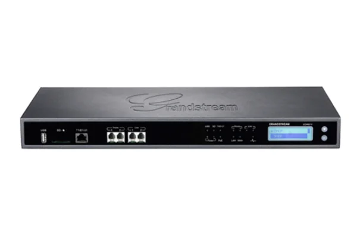
Características
IP PBX E1/T1/J1, 2000 usuarios, 200 llamadas concurrentes
GS-UCM6510
Soporta hasta 2000 registros de terminal SIP, hasta
200 llamadas concurrentes y hasta 64 asistentes a
conferencia.
Procesador Cortex A9 Quad-Core de 1 GHz.
1GB DDR3 Ram, 32GB Flash.
1 interfaz T1 / E1 / J1 integrada, puertos FXO de
troncal 2PSTN, 2 puertos FXS de teléfono / fax
analógicos con capacidad de línea de vida, cuentas de
troncal SIP ilimitadas.
GS-HA100
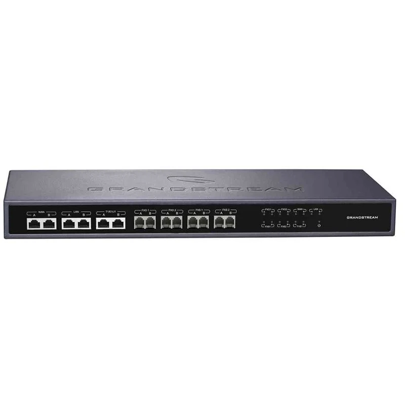
Características
Controlador de Alta Disponibilidad para UCM6510
GS-HA100
Solución inteligente de conmutación por error que
cambia automáticamente a un
UCM6510 secundario en modo de espera activo si el
primario falla.
Tiempo rápido de cambio de sistema de 10 a 50
segundos dependiendo de la cantidad
de dispositivos registrados.
Puertos FXO/E1/T1/J1/WAN/LAN.
GS-HT813
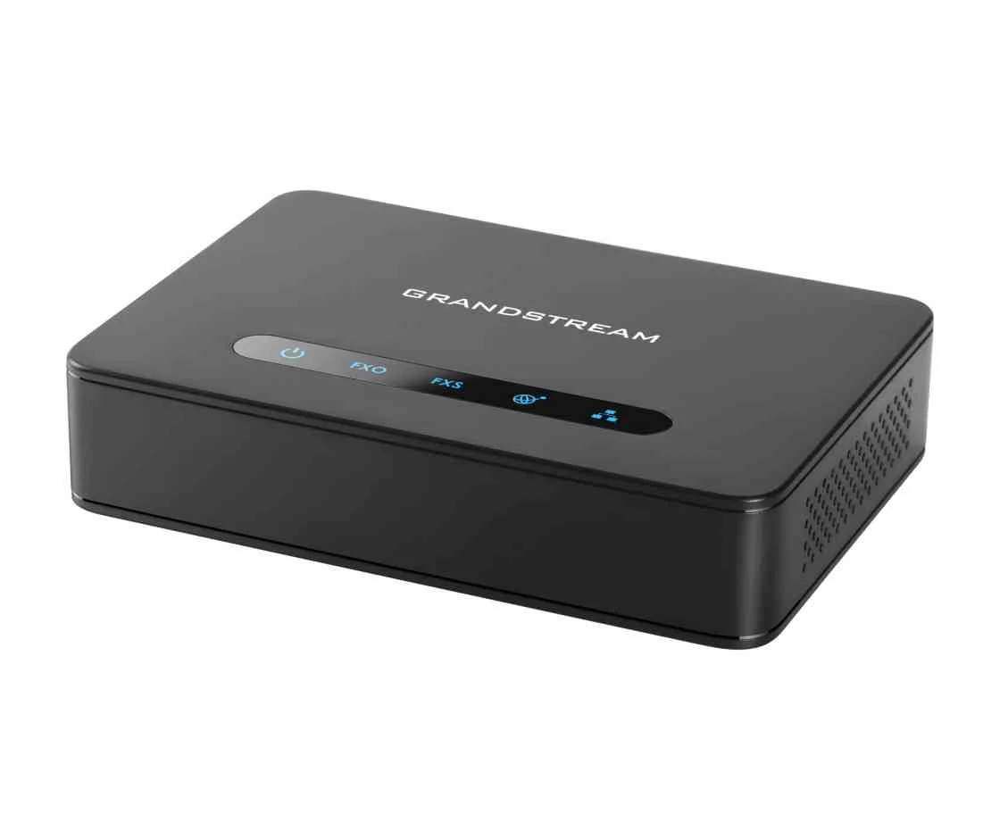
Características
Ata hibrido con puertos FXS y FXO
GS-HT813
Admite 2 perfiles SIP a través de 1 puerto FXS y 1
puerto FXO
Puertos LAN y WAN duales de 100Mbps
Soporte Lifeline (el puerto FXS se retransmitirá por
hardware al puerto FXO) en caso de corte de energía
Conferencia de voz de 3 vías por puerto
El servidor SIP con función de tolerancia a fallos se
cambia automáticamente a un servidor secundario si
el servidor principal pierde la conexión
Fuerte encriptación AES con certificado de seguridad
por unidad.
GS-HT812
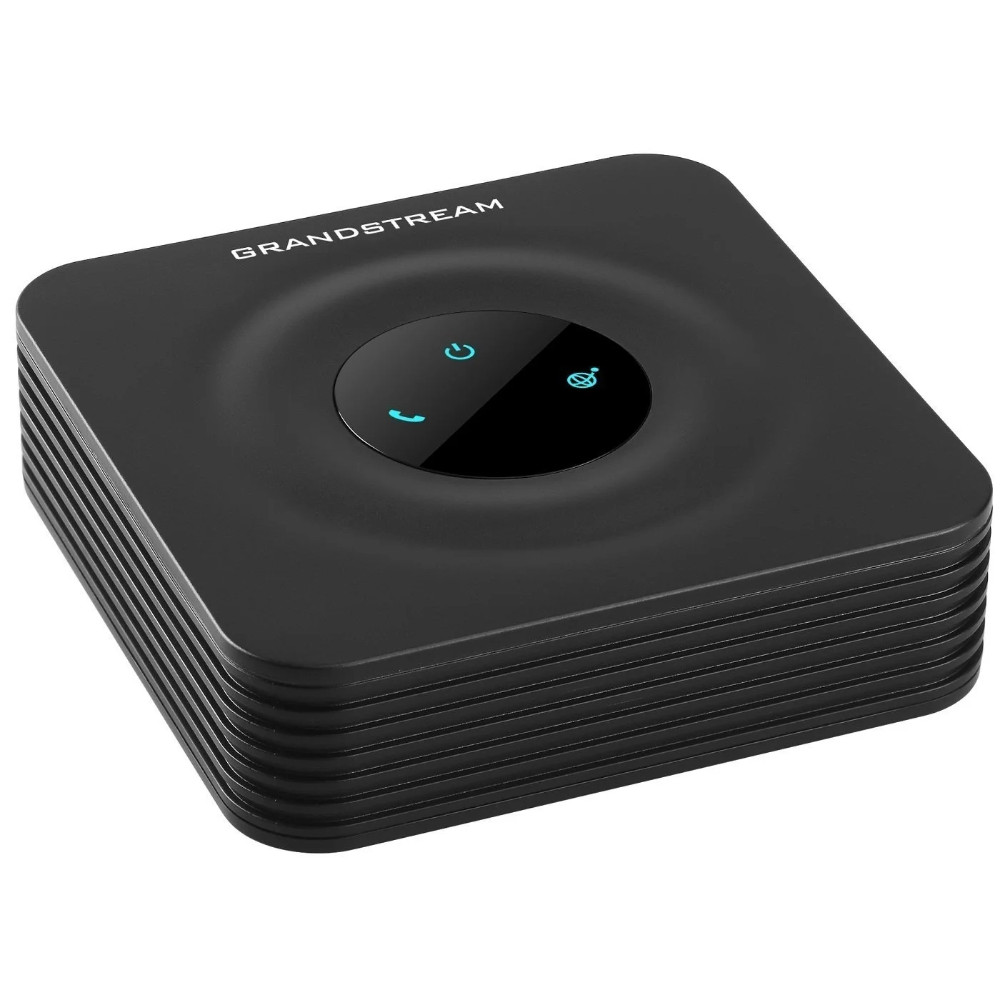
Características
Adaptador de teléfonos analógicos avanzado 2 puertos FXS y router NAT Gigabit.
GS-HT812
Soporta 2 perfiles SIP a través de 4/2 puertos
FXS y puertos Gigabit duales
Incluye un enrutador NAT incorporado que
puede manejar velocidades de enrutamiento de
hasta 100MBps
Tecnología de cifrado de seguridad TLS y SRTP
para proteger llamadas y cuentas
Soporta conferencia de voz de 3 vías.
GS-GXW4104
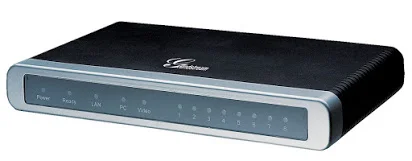
Características
Gateway IP analógicos 4 puertos FXO.
GS-GXW4104
4 u 8 puertos FXO
2 puertos de red de 10/100 Mbps
Soporte integral de códecs, identificador de llamadas,
planes de marcación flexibles y protección de
seguridad avanzada
Función de tolerancia de fallos (Failover) de servidor
SIP en caso de que el servidor SIP principal deje de
funcionar.
GS-GXW4224
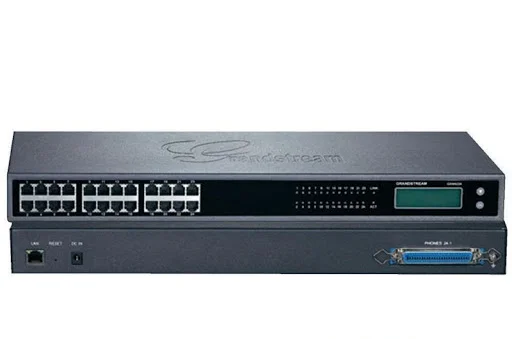
Características
Gateway GrandStream 24 puertos FXS (Extensiones análogas)
GS-GXW4224
24 puertos fxs para conectar hasta 24 teléfonos
análogos
Red 10/100/1000 para alto rendimiento
Montable en Rack
Pantalla para ver el estado del equipo
4 perfiles o servidores o proxys configurables por
puerto
Indicadores por medio de leds para el estada de cada
puerto tanto fxs como red.